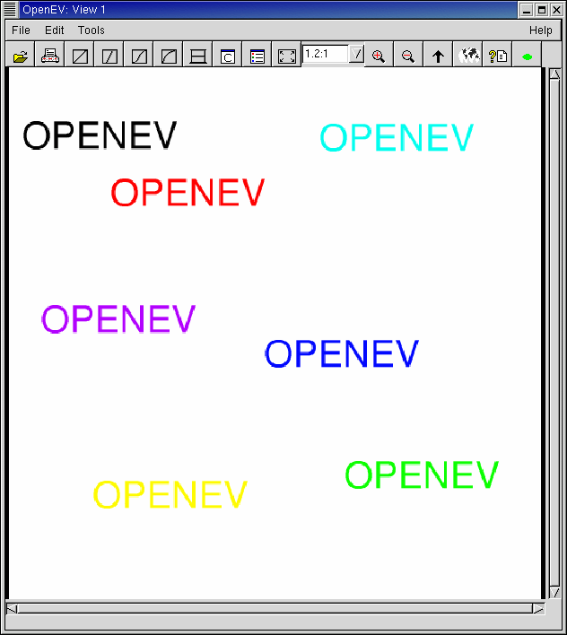
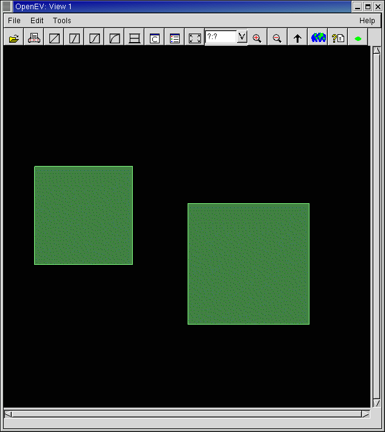

Datasets fall in two main categories from OpenEV's perspective:
raster, and vector. Raster files
are image data, a complete 2 or more dimensional array of values displayed
in OpenEV as a grayscale grid (one or two bands) or in colour if there
are more than 2 bands (one colour grid for each of three bands, with
the option to use another band to specify the degree of transparency).
Vector files consist
of a set of points, lines, or polygons (groups of points).
Here is an example of a raster image displayed in an OpenEV window:

Here is an example of a vector file, displayed in an OpenEV window:
